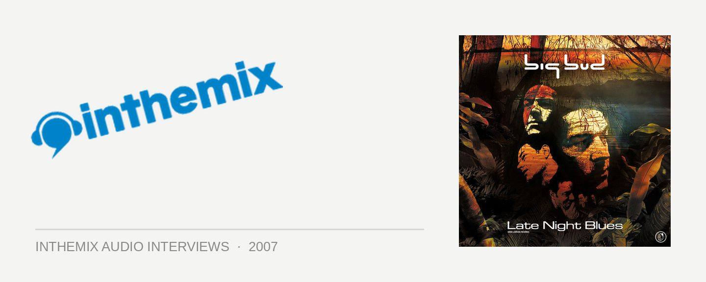

Big Bud [Audio]: Still rinsin' it out
STREAMING AUDIO INTERVIEW
The UK’s Big Bud has been producing drum n’ bass for over a decade but in 2007, after taking over the reigns of the Soundtrax label from his old partner DJ Element, he’s still rinsing it out as hard as ever. And while the drum n’ bass scene may have had its ups and downs over the years, he’s more enthusiastic than he’s even been about the quality (and diversity) of the sounds that are doing the rounds at the moment.
In the country at the moment and ripping up and down across the east coast as part of the first national DNBBQ tour, he’s got one more massive show due to come: along with the ForeignDub collective they’ll be taking over Sydney’s The Metro tomorrow night. ITM’s Angus Paterson finds out what he’s been up to in the country, the state of DNB in 2007 and what special sauce he’s been cooking up for the final leg of the DNBBQ tour!
DNBBQ hits The Metro with Big Bud as special guest on Friday 7th December, get yerself along for the tasty BBQ treats and maybe just a little bit of rinsin’ out…